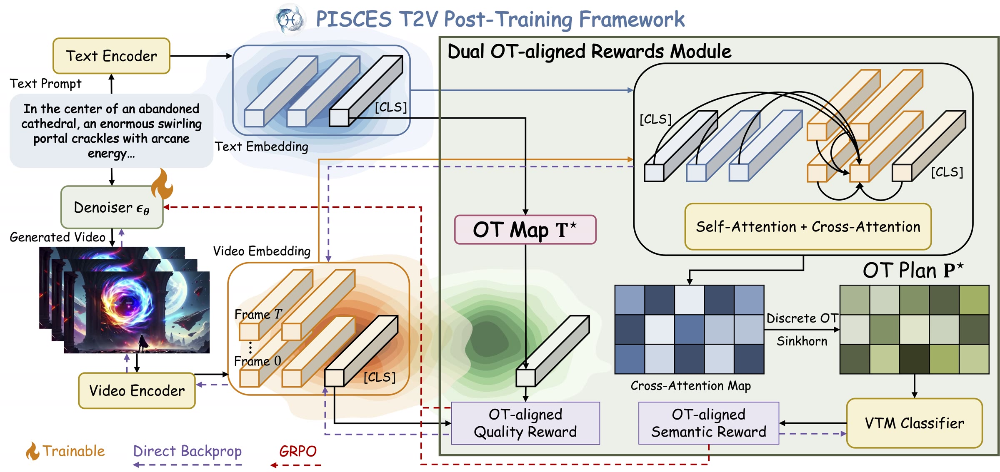

Abstract
Text-to-video (T2V) generation aims to synthesize videos with high visual quality and temporal consistency that are semantically aligned with input text. Reward-based post-training has emerged as a promising direction to improve the quality and semantic alignment of generated videos. However, recent methods either rely on large-scale human preference annotations or operate on misaligned embeddings from pre-trained vision-language models, leading to limited scalability or suboptimal supervision.
We present PISCES, an annotation-free post-training algorithm that addresses these limitations via a novel Dual Optimal Transport (OT)-aligned Rewards module. To align reward signals with human judgment, PISCES uses OT to bridge text and video embeddings at both distributional and discrete token levels, enabling reward supervision to fulfill two objectives: (i) a Distributional OT-aligned Quality Reward that captures overall visual quality and temporal coherence; and (ii) a Discrete Token-level OT-aligned Semantic Reward that enforces semantic, spatio-temporal correspondence between text and video tokens.
To our knowledge, PISCES is the first to improve annotation-free reward supervision in generative post-training through the lens of OT. Experiments on both short- and long-video generation show that PISCES outperforms both annotation-based and annotation-free methods on VBench across Quality and Semantic scores, with human preference studies further validating its effectiveness. We show that the Dual OT-aligned Rewards module is compatible with multiple optimization paradigms, including direct backpropagation and reinforcement learning fine-tuning.
Method

PISCES T2V Post-Training.
We introduce a Dual OT-aligned Rewards module: (i) a distributional OT map $\mathbf{T}^{\star}$ for Quality Reward via [CLS] representation similarity, and (ii) a discrete OT plan $\mathbf{P}^{\star}$ with spatio-temporal constraints for Semantic Reward via a Video-Text Matching (VTM) classifier. The rewards module provides supervision for fine-tuning the T2V denoiser and is applicable with direct backpropagation and RL fine-tuning (GRPO).
Qualitative Results
HunyuanVideo generations at 720p. Each carousel uses the same six MovieGenBench prompts for direct comparison.
Pre-trained HunyuanVideo
The original generator before reward-based post-training.
Prompt 0. A close up view of a glass sphere that has a zen garden within it. There is a small dwarf in the sphere who is raking the zen garden and creating patterns in the sand.
Prompt 1. A flock of paper airplanes flutters through a dense jungle, weaving around trees as if they were migrating birds.
Prompt 2. A stylish woman walks down a Tokyo street filled with warm glowing neon and animated city signage. She wears a black leather jacket, a long red dress, and black boots, and carries a black purse. She wears sunglasses and red lipstick. She walks confidently and casually. The street is damp and reflective, creating a mirror effect of the colorful lights. Many pedestrians walk about.
Prompt 3. A superintelligent humanoid robot waking up. The robot has a sleek metallic body with futuristic design features. Its glowing red eyes are the focal point, emanating a sharp, intense light as it powers on. The scene is set in a dimly lit, high-tech laboratory filled with glowing control panels, robotic arms, and holographic screens. The setting emphasizes advanced technology and an atmosphere of mystery. The ambiance is eerie and dramatic, highlighting the moment of awakening and the robot's immense intelligence. Photorealistic style with a cinematic, dark sci-fi aesthetic. Aspect ratio: 16:9 --v 6.1
Prompt 4. An extreme close-up of an gray-haired man with a beard in his 60s, he is deep in thought pondering the history of the universe as he sits at a cafe in Paris, his eyes focus on people offscreen as they walk as he sits mostly motionless, he is dressed in a wool coat suit coat with a button-down shirt, he wears a brown beret and glasses and has a very professorial appearance, and the end he offers a subtle closed-mouth smile as if he found the answer to the mystery of life, the lighting is very cinematic with the golden light and the Parisian streets and city in the background, depth of field, cinematic 35mm film.
Prompt 8. New York City submerged like Atlantis. Fish, whales, sea turtles and sharks swim through the streets of New York.
PISCES
Dual OT alignment + quality reward + semantic reward + LoRA, after 192 post-training steps.
Prompt 0. A close up view of a glass sphere that has a zen garden within it. There is a small dwarf in the sphere who is raking the zen garden and creating patterns in the sand.
Prompt 1. A flock of paper airplanes flutters through a dense jungle, weaving around trees as if they were migrating birds.
Prompt 2. A stylish woman walks down a Tokyo street filled with warm glowing neon and animated city signage. She wears a black leather jacket, a long red dress, and black boots, and carries a black purse. She wears sunglasses and red lipstick. She walks confidently and casually. The street is damp and reflective, creating a mirror effect of the colorful lights. Many pedestrians walk about.
Prompt 3. A superintelligent humanoid robot waking up. The robot has a sleek metallic body with futuristic design features. Its glowing red eyes are the focal point, emanating a sharp, intense light as it powers on. The scene is set in a dimly lit, high-tech laboratory filled with glowing control panels, robotic arms, and holographic screens. The setting emphasizes advanced technology and an atmosphere of mystery. The ambiance is eerie and dramatic, highlighting the moment of awakening and the robot's immense intelligence. Photorealistic style with a cinematic, dark sci-fi aesthetic. Aspect ratio: 16:9 --v 6.1
Prompt 4. An extreme close-up of an gray-haired man with a beard in his 60s, he is deep in thought pondering the history of the universe as he sits at a cafe in Paris, his eyes focus on people offscreen as they walk as he sits mostly motionless, he is dressed in a wool coat suit coat with a button-down shirt, he wears a brown beret and glasses and has a very professorial appearance, and the end he offers a subtle closed-mouth smile as if he found the answer to the mystery of life, the lighting is very cinematic with the golden light and the Parisian streets and city in the background, depth of field, cinematic 35mm film.
Prompt 8. New York City submerged like Atlantis. Fish, whales, sea turtles and sharks swim through the streets of New York.
PISCES without OT
Quality reward + semantic reward + LoRA after 192 post-training steps, without distributional or token-level OT alignment.
Prompt 0. A close up view of a glass sphere that has a zen garden within it. There is a small dwarf in the sphere who is raking the zen garden and creating patterns in the sand.
Prompt 1. A flock of paper airplanes flutters through a dense jungle, weaving around trees as if they were migrating birds.
Prompt 2. A stylish woman walks down a Tokyo street filled with warm glowing neon and animated city signage. She wears a black leather jacket, a long red dress, and black boots, and carries a black purse. She wears sunglasses and red lipstick. She walks confidently and casually. The street is damp and reflective, creating a mirror effect of the colorful lights. Many pedestrians walk about.
Prompt 3. A superintelligent humanoid robot waking up. The robot has a sleek metallic body with futuristic design features. Its glowing red eyes are the focal point, emanating a sharp, intense light as it powers on. The scene is set in a dimly lit, high-tech laboratory filled with glowing control panels, robotic arms, and holographic screens. The setting emphasizes advanced technology and an atmosphere of mystery. The ambiance is eerie and dramatic, highlighting the moment of awakening and the robot's immense intelligence. Photorealistic style with a cinematic, dark sci-fi aesthetic. Aspect ratio: 16:9 --v 6.1
Prompt 4. An extreme close-up of an gray-haired man with a beard in his 60s, he is deep in thought pondering the history of the universe as he sits at a cafe in Paris, his eyes focus on people offscreen as they walk as he sits mostly motionless, he is dressed in a wool coat suit coat with a button-down shirt, he wears a brown beret and glasses and has a very professorial appearance, and the end he offers a subtle closed-mouth smile as if he found the answer to the mystery of life, the lighting is very cinematic with the golden light and the Parisian streets and city in the background, depth of field, cinematic 35mm film.
Prompt 8. New York City submerged like Atlantis. Fish, whales, sea turtles and sharks swim through the streets of New York.
T2V-Turbo
Quality reward + LoRA after 192 post-training steps, without OT alignment or the fine-grained semantic reward.
Prompt 0. A close up view of a glass sphere that has a zen garden within it. There is a small dwarf in the sphere who is raking the zen garden and creating patterns in the sand.
Prompt 1. A flock of paper airplanes flutters through a dense jungle, weaving around trees as if they were migrating birds.
Prompt 2. A stylish woman walks down a Tokyo street filled with warm glowing neon and animated city signage. She wears a black leather jacket, a long red dress, and black boots, and carries a black purse. She wears sunglasses and red lipstick. She walks confidently and casually. The street is damp and reflective, creating a mirror effect of the colorful lights. Many pedestrians walk about.
Prompt 3. A superintelligent humanoid robot waking up. The robot has a sleek metallic body with futuristic design features. Its glowing red eyes are the focal point, emanating a sharp, intense light as it powers on. The scene is set in a dimly lit, high-tech laboratory filled with glowing control panels, robotic arms, and holographic screens. The setting emphasizes advanced technology and an atmosphere of mystery. The ambiance is eerie and dramatic, highlighting the moment of awakening and the robot's immense intelligence. Photorealistic style with a cinematic, dark sci-fi aesthetic. Aspect ratio: 16:9 --v 6.1
Prompt 4. An extreme close-up of an gray-haired man with a beard in his 60s, he is deep in thought pondering the history of the universe as he sits at a cafe in Paris, his eyes focus on people offscreen as they walk as he sits mostly motionless, he is dressed in a wool coat suit coat with a button-down shirt, he wears a brown beret and glasses and has a very professorial appearance, and the end he offers a subtle closed-mouth smile as if he found the answer to the mystery of life, the lighting is very cinematic with the golden light and the Parisian streets and city in the background, depth of field, cinematic 35mm film.
Prompt 8. New York City submerged like Atlantis. Fish, whales, sea turtles and sharks swim through the streets of New York.
BibTeX
@inproceedings{le2026pisces,
title = {PISCES: Annotation-free Text-to-Video Post-Training via Optimal Transport-Aligned Rewards},
author = {Le, Minh-Quan and Mittal, Gaurav and Zhao, Cheng and Gu, David and Samaras, Dimitris and Chen, Mei},
booktitle = {Forty-third International Conference on Machine Learning},
year = {2026},
url = {https://openreview.net/forum?id=wSfc8mDEjM}
}